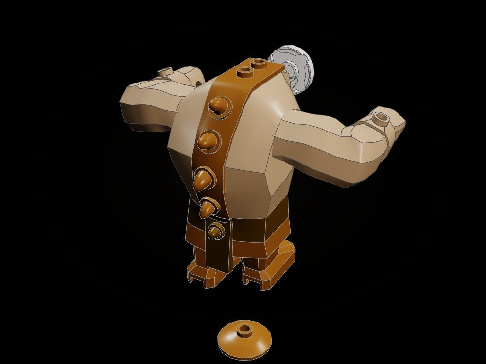
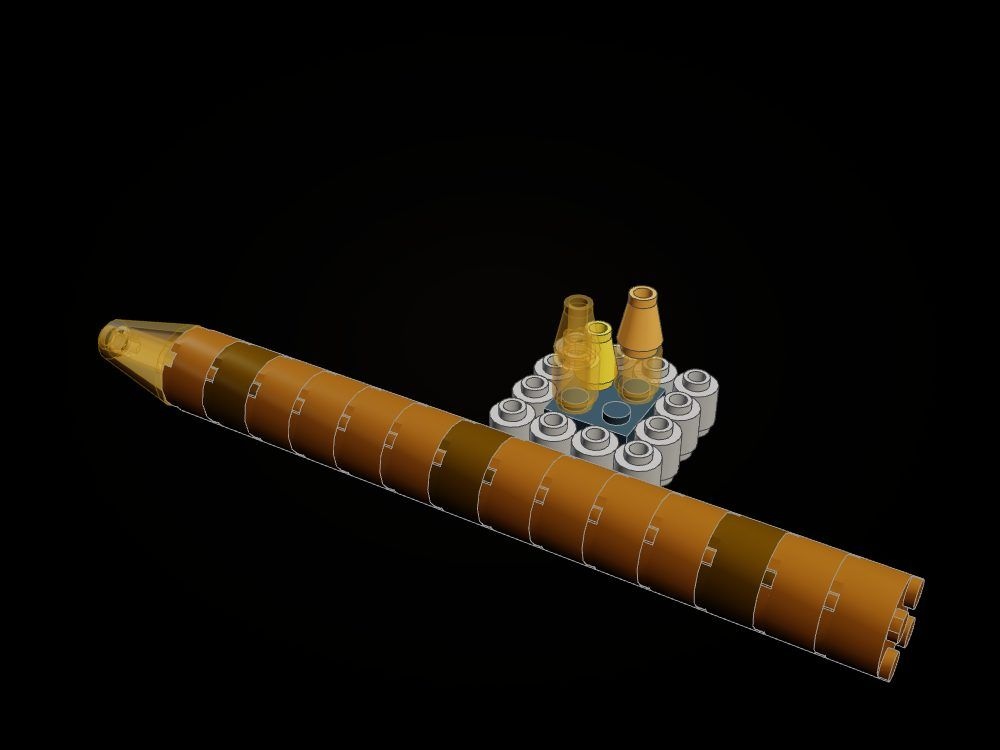
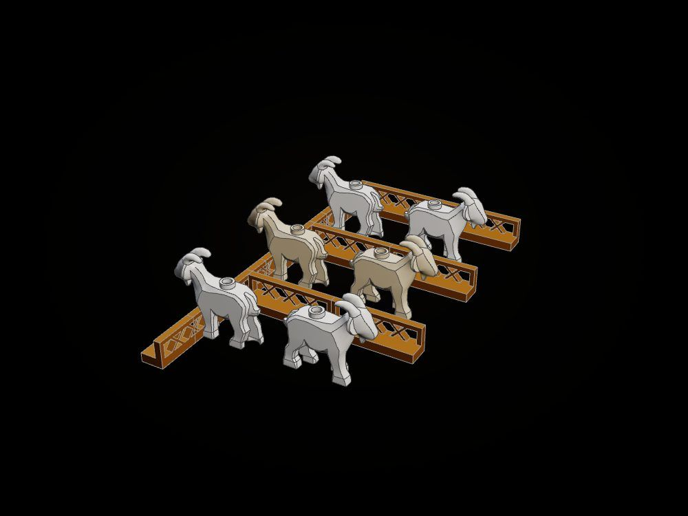
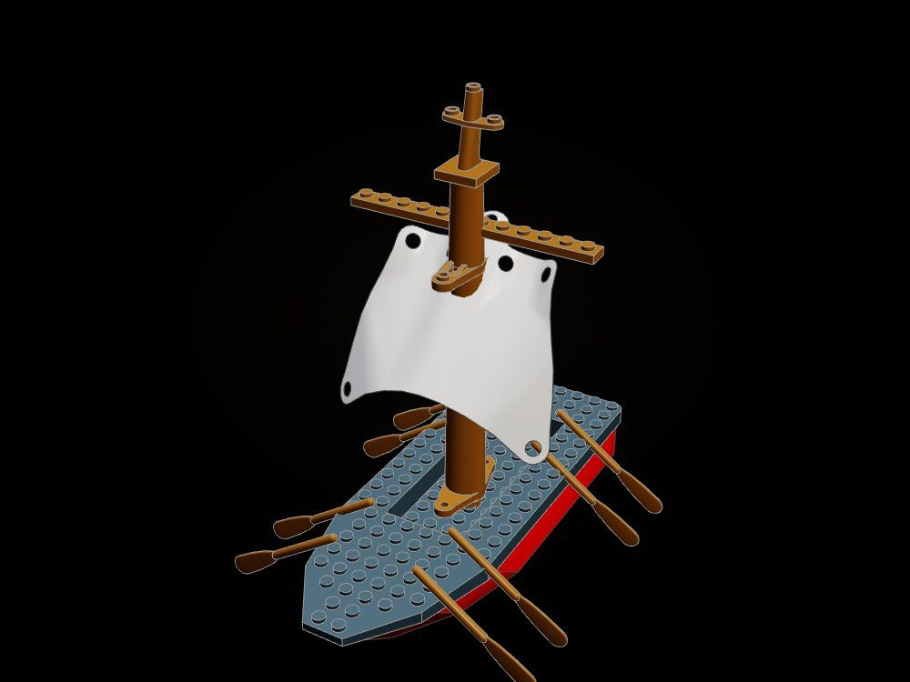
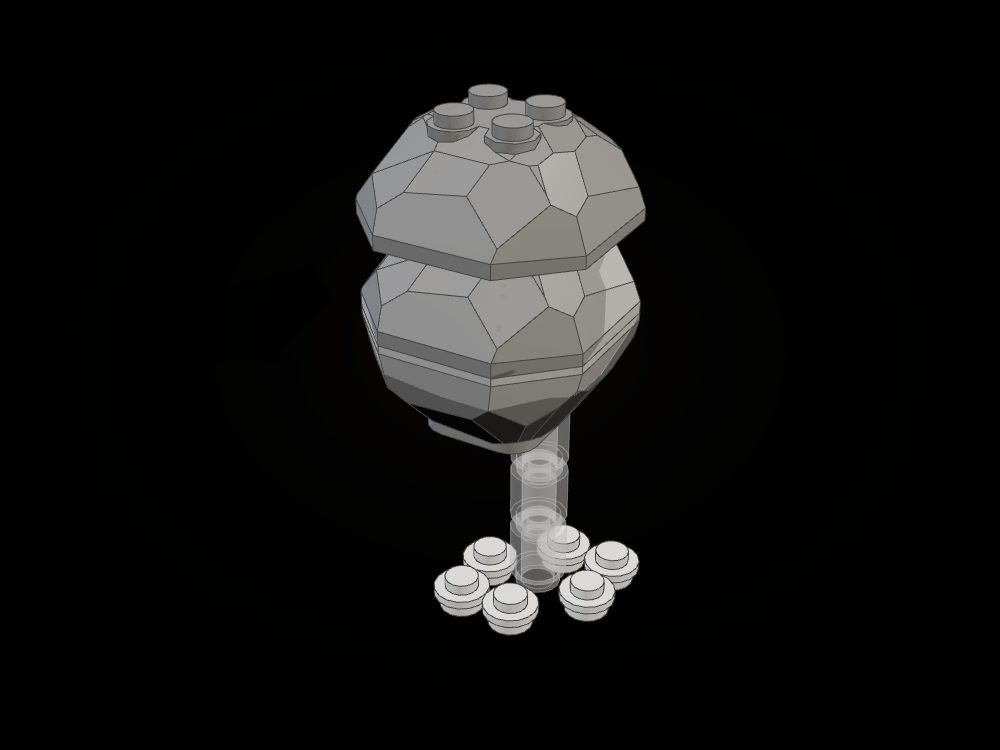

The Cave of the Cyclops
A headland on the island of the Cyclopes, sculpted in bricks the way the Wooden Horse was: the cave in it, the giant asleep in the cave, and the black ship waiting on the beach below. Lift the east flank away and the whole of Homer's cave is inside.
"We saw a cave near the sea, lofty and shaded with laurels, where many flocks slept; and round it a high yard was built of stones bedded deep." (Odyssey IX)

Two times at once
An Ideas diorama tells more than one moment, and this one tells the night and the morning. Inside it is still night: Polyphemus lies drunk on Maron's wine, the ivy-wood bowl dropped by his hand, and Odysseus and his men are heating the olive stake in the embers. Outside it is already morning: the stone is rolled back, the rams go out to pasture with men slung under them, and on the beach the ship waits, with the boulder the blinded giant threw striking the sea beside her.


At the scale of the world
A minifigure is a person of 1.75 m, so a course of bricks is 0.44 m and a stud 0.37 m. The headland is 23 courses tall (about 10 m) and 64 studs across (24 m); the vault inside is over 6 m high, tall enough for a giant to sit up, and the mouth is a giant's doorway, not a man's. The floor inside is studded dark tan plates, so everything in the cave stands on studs and stays where it is put.
The sub-assemblies
Each is a small build of its own in the instructions, and each is a close-up in the film.

The giant and the bowl
A big-figure giant with a single eye and a studded belt, and the bowl of Maron's wine: "Cyclops, here, drink wine, now you have eaten man's flesh."

The hearth
A black bed of embers ringed with stones, flames of trans-orange and yellow, and the olive stake "as large as the mast of a twenty-oared ship", its sharpened end laid in the fire.

Each kind penned apart
"The firstlings, the middlings, the youngest": fence rails dividing the flock, white rams and tan goats. Three rams are the escape.

Racks loaded with cheeses
Two shelves on posts, round cheeses in yellow, bowls of curd, and the pails "brimming with whey" on the floor below.

The black ship
The galley from the Wooden Horse's beach, drawn up bow to the shore: a red strake, a square sail on its yard, the oars out.

The rock in the sea
The boulder the blind giant hurled after the ship, caught striking the water: a clear column of spray on its own stud, white splash round it.
Another way in

How it is built
The rock is sculpted, not stacked by hand: three smoothly blended ellipsoids, roughened by weathering and cut by the vault, are turned into bricks bonded crosswise course over course. Moss grows in patches on the ledges the sky sees, soot darkens the vault over the fire, and inside the mountain only a two-stud skin and a grid of pillars remain, the way a builder frames a hill. Then the build is settled twice at once: closed, and with the flank lifted away, repairing both until every part in each clicks to the studs below. Supports that held only the flank lift away with it; the rock under the door-stone stays.
Next in this kit: the door-stone on a sliding track so it can be rolled shut, and a ram with a man clinging under its fleece.